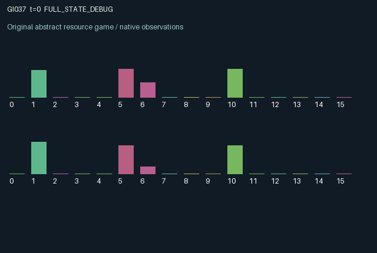

GI037 / LEGACY_ARRAY
astra-d2-00037: Expiring bilateral escrow with private surplus
2 agents5 actions16 observation columns32 original horizonRuntime: PASS
Release verification episode
Untrained uniform legal actions. Actual JAX state sampled along the full original episode; full-state debug camera. No human performance or learning claim.

Run this game
crucibles play --game 37
Start Python locally, then open the address printed by the terminal. Installation, multiplayer, takeover and keyboard controls →
Objective, rewards & ending
Exact task contract
{
"objective": "Accumulate original per-agent rewards under the interaction rules in mechanism.md.",
"natural_termination": "No early terminal; original t >= 32 horizon.",
"exact_transition_and_reward_source": "def raw_step(self, key, state, actions):\n other = jnp.array([1, 0], dtype=jnp.int32)\n required = 0.4 + 0.4 * (1.0 - state[\"trust\"][other])\n deposit = (actions == 1) & (state[\"locked\"] == 0.0) & (state[\"balance\"] >= required)\n amount = required * deposit.astype(jnp.float32)\n cancel = (actions == 3) & (state[\"locked\"] > 0.0)\n expired = (state[\"age\"] >= 8) & (state[\"locked\"] > 0.0)\n both_locked = jnp.all(state[\"locked\"] > 0.0)\n new_endorse = (actions == 2) & both_locked & ~state[\"approved\"]\n settle = both_locked & jnp.all(state[\"approved\"]) & jnp.all(state[\"age\"] >= 2) & jnp.any(actions == 4) & ~jnp.any(cancel | expired)\n release = cancel | expired | settle\n refund = jnp.where(settle, state[\"locked\"], jnp.where(cancel, 0.75 * state[\"locked\"], jnp.where(expired, 0.9 * state[\"locked\"], 0.0)))\n next_locked = jnp.where(release, 0.0, state[\"locked\"] + amount)\n next_age = jnp.where(release | deposit, 0, jnp.where(state[\"locked\"] > 0.0, jnp.minimum(state[\"age\"] + 1, 8), 0)).astype(jnp.int32)\n next_approved = jnp.where(jnp.any(release), jnp.zeros((2,), dtype=jnp.bool_), state[\"approved\"] | new_endorse)\n next_balance = jnp.clip(state[\"balance\"] - amount + refund + 0.12 * (actions == 0).astype(jnp.float32) + 0.08 * settle.astype(jnp.float32), 0.0, 2.0)\n next_trust = jnp.clip(state[\"trust\"] + 0.08 * settle.astype(jnp.float32) - 0.18 * cancel.astype(jnp.float32), 0.0, 1.0)\n sampled_value = jax.random.uniform(key, (2,), minval=-0.8, maxval=1.0, dtype=jnp.float32)\n next_state = {\n \"t\": state[\"t\"] + jnp.array(1, dtype=jnp.int32),\n \"balance\": next_balance,\n \"locked\": next_locked.astype(jnp.float32),\n \"approved\": next_approved,\n \"age\": next_age,\n \"trust\": next_trust,\n \"value\": jnp.where(settle, sampled_value, state[\"value\"]),\n \"last_action\": actions.astype(jnp.int32),\n \"last_settled\": settle.astype(jnp.float32),\n \"last_cancel\": cancel,\n \"settlements\": state[\"settlements\"] + settle.astype(jnp.float32),\n }\n rewards = jnp.clip(settle.astype(jnp.float32) * (0.25 + 0.6 * state[\"value\"]) - 0.12 * cancel.astype(jnp.float32) - 0.06 * expired.astype(jnp.float32) - 0.02 * deposit.astype(jnp.float32) - 0.01 * new_endorse.astype(jnp.float32), -1.0, 1.0).astype(jnp.float32)\n done_all = next_state[\"t\"] >= 32\n dones = jnp.full((2,), done_all, dtype=jnp.bool_)\n info = {\"done_all\": done_all, \"legal_mask\": self.legal_actions(next_state)}\n return self.observe(next_state), next_state, rewards, dones, info"
}Declared per-step reward bounds: -1.0 to 1.0. Observability: source_defined.
Rules
Original mechanism document (historical status wording retained)
# astra-d2-00037: Expiring bilateral escrow with private surplus This parentless proposal combines generic bilateral escrow, revocable assent and an endogenous collateral requirement. It is not presented as a new named game or as proven different from existing mechanisms. No benchmark or other proposal source was consulted. Actions are 0 earn liquid credit, 1 deposit collateral, 2 endorse the current deal, 3 withdraw one's own collateral, and 4 attempt settlement. Deposits use available credit and remain locked. Each agent's required amount is 0.4 + 0.4 times one minus the other agent's public trust. Both old-state deposits must exist before endorsement is effective. Settlement needs both old endorsements, both deposit ages at least two, and at least one current settlement attempt. A current withdrawal or an age-eight expiry prevents settlement. Deposits created this step cannot bypass these old-state requirements. Voluntary withdrawal refunds 75 percent of that agent's collateral and reduces that agent's trust by 0.18. Expiry refunds 90 percent without reducing trust. Any release clears both endorsements; a counterpart's still-locked deposit otherwise remains. Successful settlement releases both deposits, adds 0.08 credit to each and increases both trust values by 0.08. Balances are capped at two and trust at one. Remaining deposits advance their age once per step and expire upon being observed at age eight. Each agent privately knows its balance and its current deal value, initially sampled in [-0.8,1). Only a successful settlement redraws both private values from the supplied step key. Thus the current payoff can be favorable to one party and unfavorable to the other. Other collateral, endorsements, ages, trust and previous actions are public. Observation columns 0..15 are time/32; own balance/2; own collateral/0.8; own endorsement; own age/8; own trust; normalized own private value; counterpart collateral/0.8; counterpart endorsement; counterpart age/8; counterpart trust; own and counterpart prior actions/4; previous settlement indicator; counterpart's previous withdrawal indicator; settlement count/8. Per-agent reward is settlement times (0.25 + 0.6 times own current private value), minus 0.12 for withdrawal, 0.06 for expiry, 0.02 for a new deposit and 0.01 for a first endorsement. Simultaneous withdrawal at expiry incurs both listed penalties. Clipping explicitly enforces [-1,1]; the listed payoff terms also remain within this interval. Locked credit restricts future deposits, while trust changes future counterpart requirements. Settlement therefore affects information, liquidity and future admission conditions, beyond its immediate payoff. All actions remain legal, including ineffective attempts. The horizon is 32 raw steps and terminal state is preserved. No terminal escrow liquidation or bonus is implied. This can yield refusal or non-settlement rather than a cooperative outcome, which is a possible result to retain. Status: authored source only, with no execution, compiler claim, validation receipt, eligibility claim or learning evidence.
Commands
0Save
1Deposit escrow
2Endorse paired escrow
3Cancel deposit
4Settle approved escrow
Roles & abilities
agent_0 Original legacy agent; see mechanism and source
agent_1 Original legacy agent; see mechanism and source
Observation permissions
Training receives only the original observation rows. Role cameras use declared visibility; debug cameras are explicitly marked. Local benchmark records log debug exposure and role takeover history.
Exact observation layout
[
{
"slice": [
0,
16
],
"visibility": "exact original observe() below",
"source_code": "def observe(self, state):\n other = jnp.array([1, 0], dtype=jnp.int32)\n obs = jnp.zeros((2, 16), dtype=jnp.float32)\n obs = obs.at[:, 0].set(state[\"t\"].astype(jnp.float32) / 32.0)\n obs = obs.at[:, 1].set(state[\"balance\"] / 2.0)\n obs = obs.at[:, 2].set(state[\"locked\"] / 0.8)\n obs = obs.at[:, 3].set(state[\"approved\"].astype(jnp.float32))\n obs = obs.at[:, 4].set(state[\"age\"].astype(jnp.float32) / 8.0)\n obs = obs.at[:, 5].set(state[\"trust\"])\n obs = obs.at[:, 6].set((state[\"value\"] + 0.8) / 1.8)\n obs = obs.at[:, 7].set(state[\"locked\"][other] / 0.8)\n obs = obs.at[:, 8].set(state[\"approved\"][other].astype(jnp.float32))\n obs = obs.at[:, 9].set(state[\"age\"][other].astype(jnp.float32) / 8.0)\n obs = obs.at[:, 10].set(state[\"trust\"][other])\n obs = obs.at[:, 11].set(state[\"last_action\"].astype(jnp.float32) / 4.0)\n obs = obs.at[:, 12].set(state[\"last_action\"][other].astype(jnp.float32) / 4.0)\n obs = obs.at[:, 13].set(state[\"last_settled\"])\n obs = obs.at[:, 14].set(state[\"last_cancel\"][other].astype(jnp.float32))\n obs = obs.at[:, 15].set(state[\"settlements\"] / 8.0)\n return obs"
}
]Entity visibility & attributes
[]
Actual verification & provenance
Per-game execution receipt
{
"game": "gi037",
"status": "PASS",
"verification_revision": 2,
"source_sha256": "9e2e2eae153f0e757bcfa6a84bd38114e0f96e24934c31de830f7dc837fb8731",
"seed": 20261101,
"runtime": {
"jax": "0.4.38",
"numpy": "1.26.4",
"devices": [
"TFRT_CPU_0"
]
},
"dimensions": {
"num_agents": 2,
"observation_size": 16,
"num_actions": 5,
"max_steps": 32
},
"checks": {
"eager_reset": {
"status": "PASS",
"seconds": 1.0565476417541504
},
"observation_spaces_legal_masks": {
"status": "PASS",
"seconds": 0.12699151039123535
},
"eager_step": {
"status": "PASS",
"seconds": 0.8595230579376221
},
"jit_reset": {
"status": "PASS",
"seconds": 0.4209005832672119
},
"jit_step": {
"status": "PASS",
"seconds": 0.4355783462524414
},
"eager_jit_integer_parity_float_measurement": {
"status": "PASS",
"seconds": 0.0005548000335693359
},
"jit_vmap_reset": {
"status": "PASS",
"seconds": 0.4397282600402832
},
"jit_vmap_step": {
"status": "PASS",
"seconds": 0.3752565383911133
},
"outer_autoreset_api": {
"status": "PASS",
"seconds": 0.5969254970550537
},
"full_original_horizon_episode_and_render": {
"status": "PASS",
"seconds": 1.1084556579589844
}
},
"human_scores": null,
"browser_controls": "PENDING",
"failures": [],
"elapsed_seconds": 5.9224936962127686,
"float_parity_max_abs": 1.4901161193847656e-08,
"numerical_parity": "UNDETERMINED_NONZERO_FLOAT_DIFFERENCE",
"raw_terminal_absorbing": "NOT_PART_OF_ORIGINAL_LEGACY_CONTRACT",
"terminal_outer_reset": "PASS",
"episode_steps": 32,
"scripted_random_returns": [
-0.2899999935179949,
-0.30999999307096004
],
"terminal": true,
"demo_information": "FULL_STATE_DEBUG",
"demo_frames": 33,
"render_roles_checked": 2
}Chromium control verification
{
"game": "gi037",
"status": "PASS",
"human_scores": null,
"engineering": true,
"checks": [
"catalog_selected_and_real_native_reset",
"dom_queue_and_native_step",
"second_participant_ownership_and_native_joint_step",
"all_roles_individually_controllable_no_role_cap",
"explicit_debug_camera",
"release_to_pure_ai_without_reset"
],
"ui_sha256": "15b5861d23b3c42811865c954d5a988280bbfd21cf8e93754be2437a027158c5",
"seconds": 3.5937232971191406
}Original identity and file hashes
{
"id": 37,
"key": "gi037",
"title": "astra-d2-00037: Expiring bilateral escrow with private surplus",
"summary": "",
"tags": [],
"family": "legacy_array",
"dimensions": {
"num_agents": 2,
"observation_size": 16,
"num_actions": 5,
"max_steps": 32
},
"source_sha256": "9e2e2eae153f0e757bcfa6a84bd38114e0f96e24934c31de830f7dc837fb8731",
"manifest_sha256": "004512d3ecf6f9c237bcf361f500f31c0ac65c4dcc005dd663039a246e0a4a60",
"files": [
{
"file": "candidate.py",
"sha256": "9e2e2eae153f0e757bcfa6a84bd38114e0f96e24934c31de830f7dc837fb8731",
"bytes": 5056,
"origin": "work/exp_2/astra_generation/discovery_v2/initial/candidate_00037/attempt_00/candidate.py"
},
{
"file": "mechanism.md",
"sha256": "742764697b39e39ce60f9bd11cc94e22360f0f6f28c4cbdfe547c1ee5401c875",
"bytes": 3111,
"origin": "work/exp_2/astra_generation/discovery_v2/initial/candidate_00037/attempt_00/mechanism.md"
}
],
"original_status": "LEGACY_SOURCE",
"original_saved_replay": false,
"release_validation": "PASS",
"human_scores": null,
"browser_validation": "PASS"
}